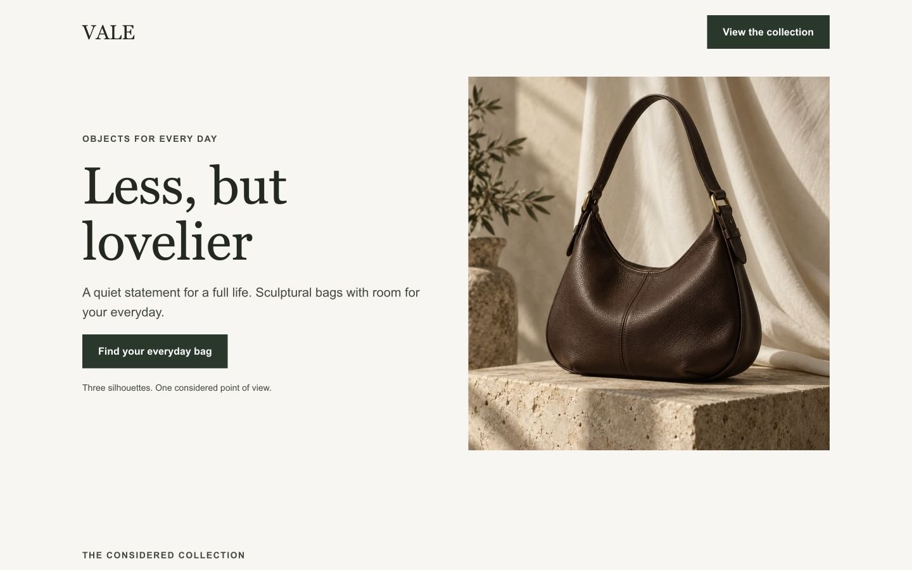
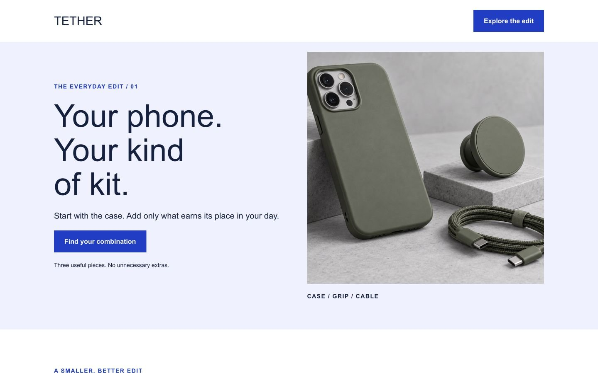
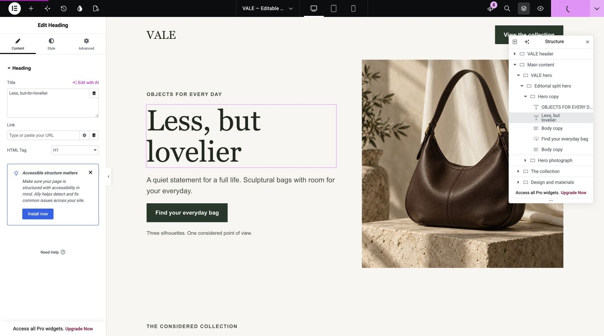

01 / FASHION & LIFESTYLE
VALE Objects
A restrained collection page with an editorial hero, three product cards and a materials story. Stacked layouts and distinct type sizes for smaller screens.
WORDPRESS / ELEMENTOR FREE
Two responsive landing-page studies, built with native Elementor containers and widgets. Explore the finished pages or open the editor to see how they work.
Portfolio concepts · WordPress 7.1.2 · Elementor 4.3.1 · No Pro widgets

01 / FASHION & LIFESTYLE
A restrained collection page with an editorial hero, three product cards and a materials story. Stacked layouts and distinct type sizes for smaller screens.

02 / ACCESSORIES & PRODUCT EDUCATION
A bold accessories edit with a clear first-screen action, three comparison cards and a practical fit guide. Built around a simple mobile reading order.
BEHIND THE PAGES
Headings, images, text and buttons remain individually editable. Named containers, native responsive settings, and a small accessibility support file make the builds easy to understand and maintain.
Open the walkthrough
TRY IT YOURSELF
Launch a fresh WordPress Playground sandbox with both pages and Elementor installed. The first launch downloads WordPress and the plugins and may take a minute. Each visitor gets a separate sandbox; edits do not change these public previews.
Static previews show the rendered WordPress pages. They do not include checkout, customer accounts, form submissions or a production WordPress backend.
Read the verification notes ↗